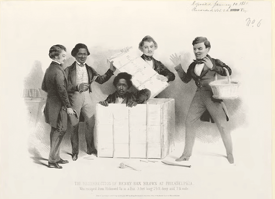
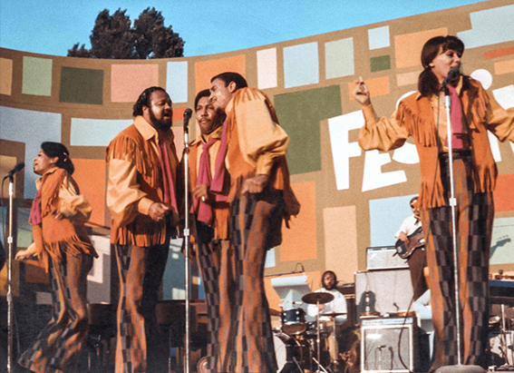

NATIONAL GEOGRAPHIC
Walking in the footsteps of China’s historic caravans of tea porters
HISTORY & CULTURE
TIANQUAN COUNTY, SICHUAN PROVINCE, CHINA“I saw them when I was a young boy. They were always bent over.”
Meet Chen Shou Kang: friendly, bald, energetic even in his 80s, the unofficial historian of the village of Wayao Guan, located in the lumpy mountains of western China. Chen is remembering the last beifu he ever saw. Beifu: the legendary tea porters who for 250 years shouldered impossible burdens of black tea over the eastern Himalaya and into Tibet. Across generations of such trade, perhaps two million bearers may have inched over China’s perilous tea roads, carrying individual loads as heavy as a modern refrigerator. They did this wearing grass sandals or barefoot, over 11,000-foot elevations, for weeks at a stretch. Often, they managed only a few dozen steps before pausing from exhaustion.
“They were poor. They had no other choice,” old Chen explains. “By the 1950s they were replaced by trucks.”
Rummaging through his backroom museum, Chen suddenly grins. He holds up an object made of bamboo: a strange, bladelike tool. It is an antique “sweat wiper” designed to scrape perspiration from the brows and eyes. A long time ago, it once dangled by a string from the wooden pack frame of a tea porter. An artifact from an emphatically bygone era. From a different planet. A relic of extreme human experience of boggling endurance that today is virtually impossible to access or comprehend.
I am walking across the world. The heaviest item in my rucksack is a laptop computer weighing two pounds. On this segment of my trek through China, I am joined by three philosopher friends. Li Mengchi is a seeker who guides tourists into the deserts of Arabia. Yang Wendou is a sage who teaches schoolchildren Yunnanese culture. And Cheng Xinhao is the brilliant maker of conceptual art videos. Walking, they argue the merits of idealism over realism, of memory over forgetting. They sing the Mandarin version of “The Internationale” in the driving rain.
Together we hike over Erlang Shan, a stormy, 11,200-foot massif that once tested the old tea porters’ will. The colossal peak looms over fading trading paths between Kangding a historic Tibetan outpost of tea markets and icy winters and Ya’an, a lush, lowland hub of tea production in Sichuan Province, some 130 miles to the east.
This rugged borderland is notorious for its hazards.
The ramparts of the Tibetan Plateau knife up from the Sichuan Basin into an austere world of heavy fogs, ice, snow, and strong winds. Landslides and rockfalls are common. We slip, crazy-legged, up and down steep goat trails greased by wet mud. We hopscotch along abandoned roads that are chopped to pieces by flash floods. Dripping cedars loom out of the heavy mists. Rotten snow clings to the blue pine shadows. At rest stops, we sometimes spot curious holes drilled into flat bedrock. These small cavities were worn by the action of thousands of wooden guaizi: the indispensable walking sticks of a vanished army of tea porters. Catching their breath, the tough beifu would fit their t-shaped alpenstocks into such sockets to prop up their enormous packs, which they rarely removed on the trail.
It's no stroll in the park to tread the old trading trails—let alone if you had to shoulder 250 pounds of tea.
By the early 1700s, say historians, the expanding Qing Dynasty had pushed into Sichuan’s ethnic Tibetan regions, and began exporting vast consignments of the region’s cheap, dark tea to the peoples of the Himalaya. At its peak, this commerce moved nearly 16 million pounds of tea a year, all of it pressed into dry bricks, and the bulk of it transported from the plantations on human backs. People were more economical conveyances than packhorses. Most of the carriers were men. But women and children sometimes portered too. Their thousands of cargoes ended up steeping in millions of cups of yak butter tea.
“Heavy, long-distance carrying is well-known elsewhere in the world, particularly in Nepal,” writes Patrick Booz, an expert on the Chinese tea trade at Columbia University, in New York, “but nowhere else ever did porters carry loads of such awful weight, with such little time for rest.”
The beifu traversed the length of Sichuan’s tea roads in about 20 days. Their burdens were so crushing they averaged just seven miles a day. Two hundred and fifty pounds was considered a moderate load, Booz notes. But packs tipping 400 pounds weren’t unusual.
“I can still feel the pain,” says Wang Shikang, 89, among the last living beifu in the village of Kang Zhi. “I have rheumatism in my knees and back.”
Wang’s eyes glitter in the leather shield of his face as he recalls his days as a teenager in the twilight of the foot trade, before paved roads penetrated the region during World War II. He slept on plank beds with scores of other rag-wrapped carriers at porters’ inns. He gulped cold dumplings to fuel his outraged muscles. Each trek to the alpine tea markets earned a palmful of coins: a survival wage that bought a sackful of corn or rice.
Comments :
- john Very good
- john Very good
Leave a Reply
Your email address will not be published. Required fields are marked*
Related posts:
-
The origins of African American studies, explained
At high schools across the United States, students can take for the first time an Advanced Placement course in African American studies that addresses “the vital contributions and experiences of African Americans.”
View article -
This magician escaped slavery by mailing himself to freedom
On an early spring morning in 1849, an enslaved Black man named Henry Brown folded himself into a three-foot by two-foot wooden crate. Twenty-seven hours and 350 miles later, he arrived at the home of William Johnson
View article -
Questlove on the ‘Summer of Soul’ ‘An awesome look at beautiful people having fun’
In 2021, Ahmir “Questlove” Thompson, drummer for the Roots, reintroduced the festival with his debut documentary Summer of Soul
View article